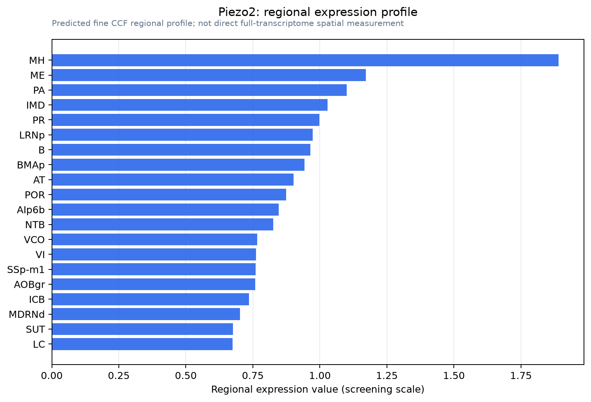

Piezo2
Piezo-type mechanosensitive ion channel component 2 (Protein FAM38B)
Spatial tier: RESTRICTED · Class: ION_CHANNEL · Top region: MH (Medial habenula) · Positive regions: 23/554
44.2Discovery Score
38.9Targetability Score
CEvidence grade C
What this means: Piezo2: fine CCF profile is restricted toward MH (top regions: MH, ME, PA, IMD, PR; 23 positive regions); direct spatial validation is still required.
Function in MH: evidence, prediction, innovation
- Gene function
- PIEZO2 is a very large trimeric mechanically activated cation channel with a propeller-shaped architecture that senses membrane tension directly, without accessory proteins. It is the principal mechanotransducer for light touch, proprioception and several interoceptive reflexes, and human PIEZO2 loss-of-function produces a distinctive syndrome of absent proprioception and touch with preserved nociception.
- Region function
- The medial habenula is a dorsal diencephalic nucleus whose cholinergic, glutamatergic and substance-P neurons project almost exclusively through the fasciculus retroflexus to the interpeduncular nucleus; it controls nicotine aversion and withdrawal, anxiety and mood.
- Published in this region
- inferred No region-specific literature found. The only report linking PIEZO2 to this nucleus is a pharmacology study of a traditional-medicine formulation acting on an Epac1-Piezo2 pathway in the medial habenula-interpeduncular system (Wang et al. 2025), which is not a primary characterisation; more broadly, Wang et al. 2021 reported Piezo2 in a select set of central neurons, but the channel's validated biology is in dorsal root ganglia, Merkel cells and urothelium (Woo et al. 2015; Marshall et al. 2020).
- Predicted function
- Prediction: the medial habenula lies directly against the third ventricle, so PIEZO2 there is predicted to make these neurons sensitive to ventricular pulsation and to osmotic cell-volume change, converting a mechanical or hydration signal into tonic excitatory drive along the fasciculus retroflexus. Conditional Piezo2 deletion in Tac1-Cre or Chat-Cre medial habenula neurons is predicted to abolish stretch-activated currents in MH slices, reduce the aversive and anxiogenic response to osmotic or hypertonic challenge, and blunt nicotine withdrawal severity; the Piezo1/2 agonist Yoda1-like compounds and Jedi peptides, or GsMTx4 block, give complementary acute tests.
- Innovation
- ★★★★★ 5/5 PIEZO2 has essentially no validated central neuronal role, and the medial habenula's periventricular position makes it one of the most plausible and testable places to find one.
- Tools
- Piezo2 floxed and Piezo2-GFP-IRES-Cre mice; Piezo2-conditional knockout crosses with Tac1-Cre or Chat-Cre; the mechanical blocker GsMTx4 and ruthenium red; Piezo-activating compounds (Jedi1/2 for PIEZO1 as comparators); anti-PIEZO2 antibodies require knockout validation; pressure-clamp and high-speed indentation electrophysiology in slices.
- References
Direct evidence located at the region
No Allen ISH section could be located at this region's centroid for the recorded experiments.
Look it up yourself: Allen Mouse Brain ISH for Piezo2Allen reference atlas: MH (structure 483)ABC Atlas MERFISH viewer(in the ABC Atlas choose dataset MERFISH-C57BL6J-638850-CCF, colour cells by gene "Piezo2" or by parcellation_substructure "MH")All genes confined to MH + 3-D brain
Direct spatial evidence
MERFISH REGION LOCATOR

Regional expression figure

Predicted WMB × fine-CCF profile; not direct full-transcriptome spatial measurement.
Spatial profile
Evidence and specificity
- Evidence status
- PREDICTED_FINE
- Direct sources
- None; predicted localization only
- Exclusive threshold
- 12 positive regions out of 554
- Spatial specificity
- 0.284
- Top-region fraction
- 0.058
- Filter status
- PASS
Interpretation limits
- Cell-type-to-region projection is imputed expression, not direct spatial measurement.
- Adult reference atlases do not establish stability across age, sex, strain, state, or disease.
- Transcript abundance does not guarantee protein abundance or genetic-tool performance.